結構學 SA ｜ 命題大綱 SA-U2-4 矩陣分析法 ｜ 單元二 ｜ 影片講義
元素勁度矩陣：四場實驗＋投影兩次
本講義依解題過程影片〈SA-U2-4-2 元素勁度矩陣〉逐段整理，圖片皆為影片中的黑板畫面。
影片長度 10:318 章 · 24 段例題：兩桿桁架（3 m × 4 m，P = 30 kN）接 SA-U2-4-1；下一集 SA-U2-4-3 整體組裝
一根桿件 ＝ 幾場「單位位移實驗」梁元素：四場實驗 → 12、6、4、2 ｜ 桁架元素：投影兩次 → \(c^2,\ cs,\ s^2\)
各章標題旁的時間按鈕可直接跳到影片對應位置（需與 video/ 資料夾放在一起開啟）。
0開場
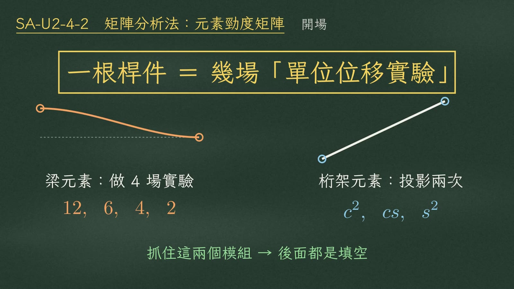
黑板：兩個模組——梁元素四場實驗、桁架元素投影兩次影片 0:24
上一集說過，勁度矩陣的每一直行，就是一場單位位移實驗。這一集把同樣的實驗做在一根桿件上。
| 元素 | 做法 | 得到 |
|---|
| 梁元素 | 做四場實驗 | 四個數字：12、6、4、2 |
| 桁架元素 | 只做一件事：投影兩次 | \(c^2,\ cs,\ s^2\) |
重點抓住這兩個模組，後面的題目都變成填空。
1梁元素：四場實驗
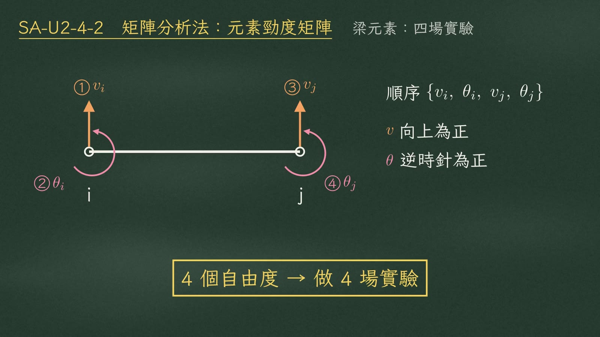
黑板：四個自由度與正負號約定影片 0:46
先看梁元素。一根梁兩個端點 i 和 j，每端兩個自由度：垂直位移 \(v\)，和轉角 \(\theta\)。順序是
$$\{d\}=\{\,v_i,\ \theta_i,\ v_j,\ \theta_j\,\}$$
\(v\) 向上為正，\(\theta\) 逆時針為正。四個自由度，就做四場實驗。
第 ① 場：\(v_i=1\)，其餘鎖死
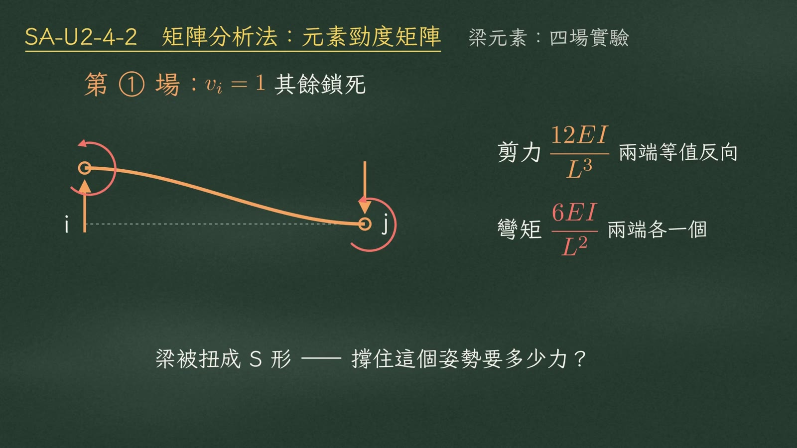
黑板：i 端上移一單位，梁被扭成 S 形影片 1:09
只讓 i 端往上平移一個單位，其他三個全部鎖死。梁被扭成一個 S 形。要撐住這個姿勢：
| 端力 | 大小 | 說明 |
|---|
| 剪力 | \(\dfrac{12EI}{L^3}\) | 兩端各一個，等值反向 |
| 彎矩 | \(\dfrac{6EI}{L^2}\) | 兩端各一個 |
第 ② 場：\(\theta_i=1\)，其餘鎖死
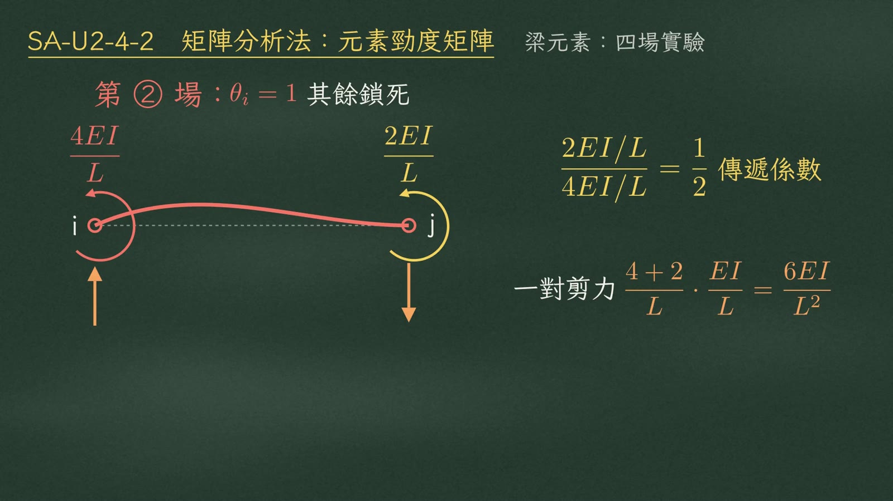
黑板：i 端轉一單位，近端 4、遠端 2，傳遞係數 ½影片 1:33
只讓 i 端轉一個單位。近端要施加 \(4EI/L\) 的彎矩；遠端被鎖住，被扯出 \(2EI/L\)，剛好一半——這就是傳遞係數 ½。
$$\frac{2EI/L}{4EI/L}=\frac12\ \text{（傳遞係數）}$$
兩個彎矩合起來要靠一對剪力平衡：
$$V=\frac{4+2}{L}\cdot\frac{EI}{L}=\frac{6EI}{L^2}$$
第 ③、④ 場：換 j 端做
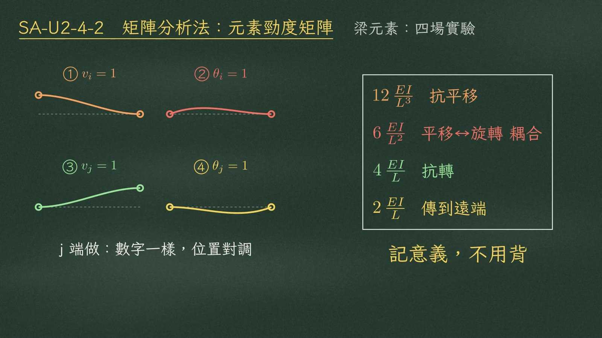
黑板：四場實驗、四個數字的意義影片 2:00
第三、第四場換 j 端做，數字一模一樣，只是位置對調、正負跟著方向走。所以整個梁元素只有四個數字：
| 數字 | 意義 |
|---|
| \(12\,\dfrac{EI}{L^3}\) | 抗平移 |
| \(6\,\dfrac{EI}{L^2}\) | 平移 ↔ 旋轉的耦合 |
| \(4\,\dfrac{EI}{L}\) | 抗轉 |
| \(2\,\dfrac{EI}{L}\) | 傳到遠端的彎矩 |
不用背記意義，不用背。（顏色對應黑板：橘＝12、紅＝6、綠＝4、黃＝2）
2排成 4×4 矩陣
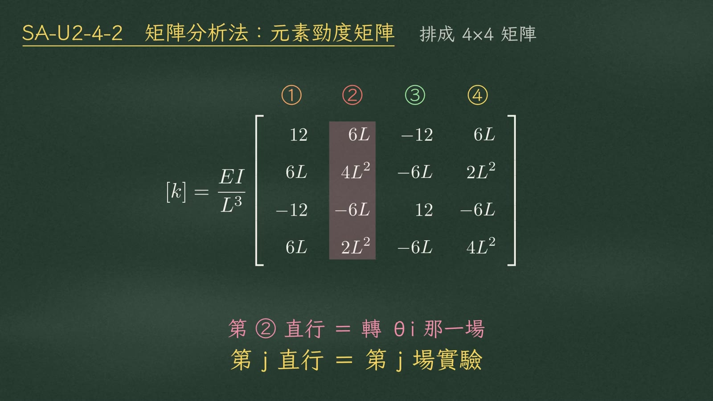
黑板：第 j 直行 ＝ 第 j 場實驗（粉紅＝第 ② 直行）影片 2:25
把四場實驗依序填進直行——第一場是第一直行，第二場是第二直行——就得到四乘四的元素勁度矩陣，前面提一個 \(EI/L^3\)：
$$[k]=\frac{EI}{L^3}\begin{bmatrix}12 & \color{#c2557a}{6L} & -12 & 6L\\ 6L & \color{#c2557a}{4L^2} & -6L & 2L^2\\ -12 & \color{#c2557a}{-6L} & 12 & -6L\\ 6L & \color{#c2557a}{2L^2} & -6L & 4L^2\end{bmatrix}$$
粉紅色這一直行，就是剛剛轉 \(\theta_i\) 的那一場：\(6L,\ 4L^2,\ -6L,\ 2L^2\)。
剛體位移檢查
寫完怎麼知道對不對？做剛體位移檢查。
① 整根平移：整根梁一起往上平移一個單位，也就是 \(\{d\}=\{1,0,1,0\}^T\)。梁沒有彎，不該有任何力。乘進去：
$$\text{第 1 列：}12-12=0,\qquad \text{第 2 列：}6L-6L=0\quad\Rightarrow\quad [k]\{d\}=\{0\}$$
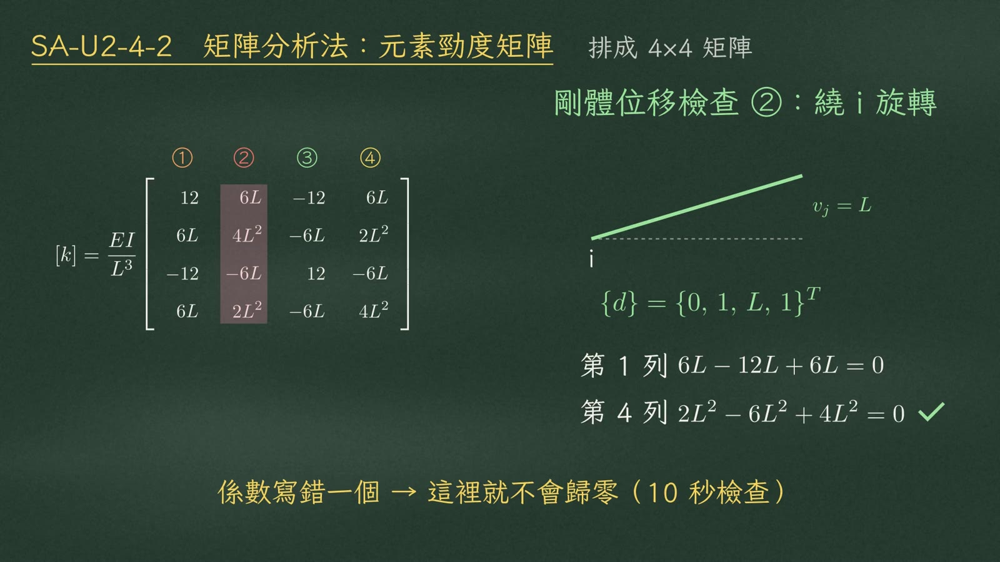
黑板：剛體位移檢查 ②——繞 i 旋轉影片 3:14
② 繞 i 旋轉：繞 i 端轉一個單位，代入 \(\{d\}=\{0,1,L,1\}^T\)：
$$\text{第 1 列：}6L-12L+6L=0,\qquad \text{第 4 列：}2L^2-6L^2+4L^2=0$$
檢查只要有一個係數寫錯，這裡就不會歸零——考場十秒就能檢查完。
另外兩個性質
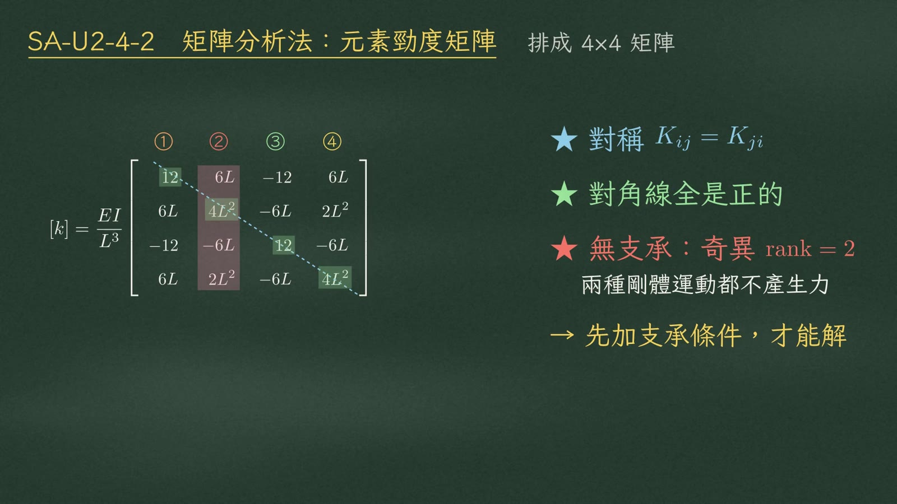
黑板：對稱、對角線恆正、無支承即奇異影片 3:38
| 性質 | 內容 |
|---|
| ★ 對稱 | \(K_{ij}=K_{ji}\) |
| ★ 對角線 | 全是正的 |
| ★ 無支承 | 沒有支承的單根梁，矩陣是奇異的，\(\text{rank}=2\)——因為兩種剛體運動都不產生力 |
重點一定要先加上支承條件，才能解。
3修正勁度：遠端鉸接
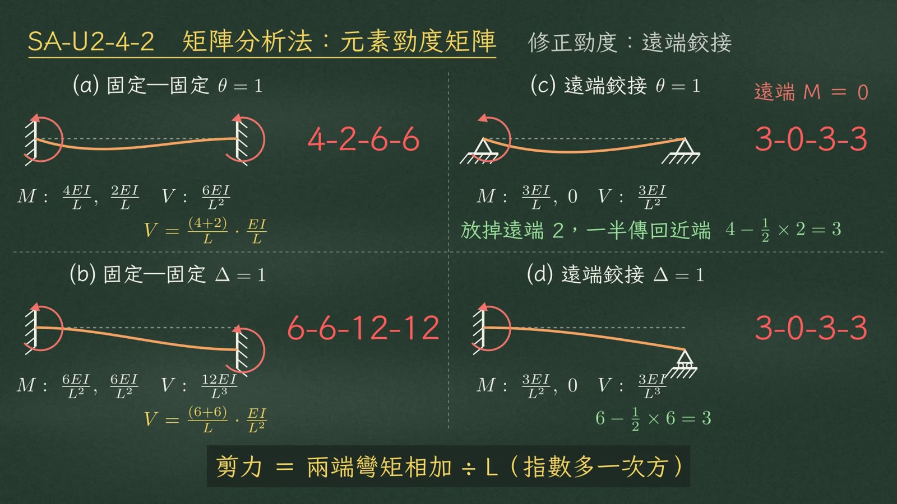
黑板：(a)(b) 固定—固定 與 (c)(d) 遠端鉸接，四張圖與口訣影片 4:57
教科書常把這些實驗畫成四張圖，旁邊用口訣記。
| 情況 | 口訣 | 彎矩 \(M\) | 剪力 \(V\) |
|---|
| (a) 固定—固定，\(\theta=1\) | 4-2-6-6 | 近端 \(\dfrac{4EI}{L}\)，遠端 \(\dfrac{2EI}{L}\) | \(\dfrac{6EI}{L^2}\) |
| (b) 固定—固定，\(\Delta=1\) | 6-6-12-12 | 兩端 \(\dfrac{6EI}{L^2}\) | \(\dfrac{12EI}{L^3}\) |
| (c) 遠端鉸接，\(\theta=1\) | 3-0-3-3 | 近端 \(\dfrac{3EI}{L}\)，遠端 0 | \(\dfrac{3EI}{L^2}\) |
| (d) 遠端鉸接，\(\Delta=1\) | 3-0-3-3 | \(\dfrac{3EI}{L^2}\)，鉸接端 0 | \(\dfrac{3EI}{L^3}\) |
遠端鉸接：放掉遠端，一半傳回近端
如果遠端不是固定，而是鉸接呢？遠端彎矩必須是零。做法很簡單：把原本遠端的 \(2EI/L\) 放掉，放掉的時候，有一半傳回近端：
$$\theta=1:\quad 4-\tfrac12\times 2=3\quad\Rightarrow\quad M_{\text{近}}=\frac{3EI}{L},\ \ M_{\text{遠}}=0,\ \ V=\frac{3EI}{L^2}$$
平移也一樣。固定端原本兩端各 6，把鉸接那端的 6 放掉，一半傳回來：
$$\Delta=1:\quad 6-\tfrac12\times 6=3\quad\Rightarrow\quad M=\frac{3EI}{L^2},\ \ V=\frac{3EI}{L^3}$$
兩張圖都是 3-0-3-3。
剪力不用另外記剪力就是兩端彎矩相加再除以 \(L\)：\(V=(M_i+M_j)/L\)。所以 \((3+0)/L\)，指數多一次方。黑板上 (a)(b) 也標了同樣的關係：\(V=\frac{4+2}{L}\cdot\frac{EI}{L}\)、\(V=\frac{6+6}{L}\cdot\frac{EI}{L^2}\)。
4桁架元素：投影兩次
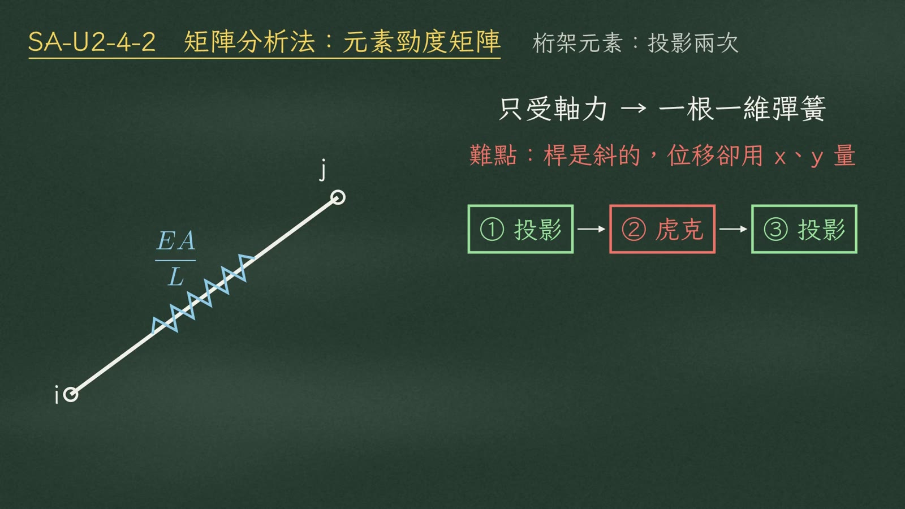
黑板：一根 \(EA/L\) 的彈簧；①投影 → ②虎克 → ③投影影片 5:17
桁架桿只承受軸力，本質上就是一根勁度 \(EA/L\) 的彈簧。難的地方只有一個：桿子是斜的，節點位移卻是用 x、y 來量。解法就是投影兩次。
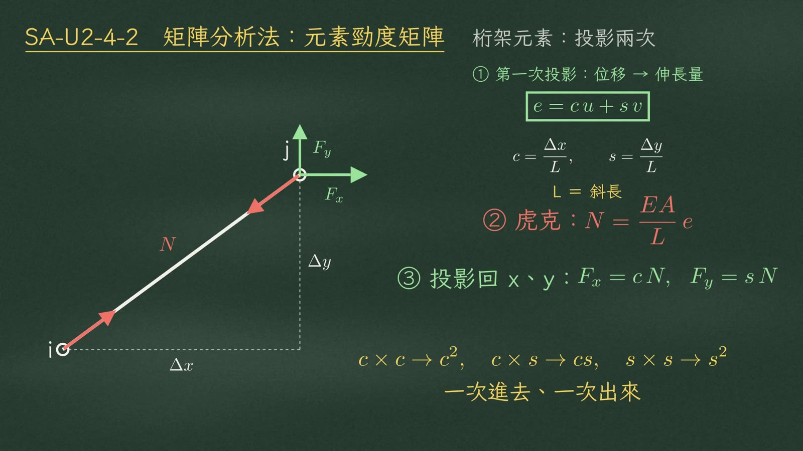
黑板：投影 → 虎克 → 投影，一次進去、一次出來影片 6:11
| 步驟 | 公式 | 說明 |
|---|
| ① 第一次投影 | \(e=c\,u+s\,v\) | 節點位移 \(u,v\) 只有沿桿軸的分量會讓桿子伸長；\(c=\dfrac{\Delta x}{L},\ s=\dfrac{\Delta y}{L}\)，\(L\) 是斜長 |
| ② 虎克定律 | \(N=\dfrac{EA}{L}\,e\) | 軸力 |
| ③ 第二次投影 | \(F_x=c\,N,\ \ F_y=s\,N\) | 把軸力拆回 x、y |
一次進去、一次出來：\(c\) 乘兩次就是 \(c^2\)，\(c\) 乘 \(s\) 就是 \(cs\)，\(s\) 乘兩次就是 \(s^2\)。
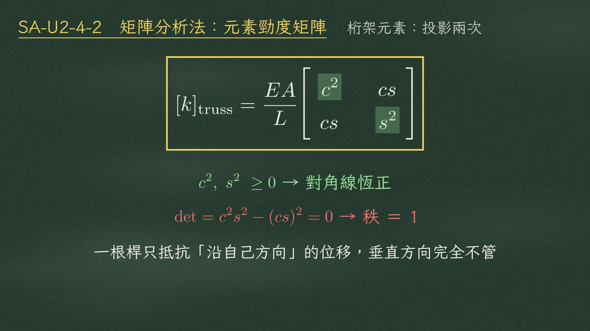
黑板：桁架桿對一個節點的 2×2 貢獻影片 6:40
所以桁架桿對一個節點的貢獻：
$$[k]_{\text{truss}}=\frac{EA}{L}\begin{bmatrix}c^2 & cs\\ cs & s^2\end{bmatrix}$$
| 性質 | 原因 |
|---|
| 對角線恆正 | \(c^2,\ s^2\ge 0\) |
| \(\det=0\)，秩 = 1 | \(\det=c^2s^2-(cs)^2=0\)；一根桿只抵抗沿自己方向的位移，垂直方向完全不管 |
5例題：兩桿桁架
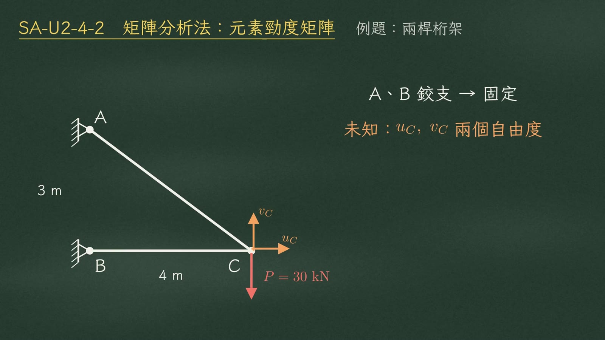
黑板：題目——A、B 鉸支，C 點受 30 kN 向下影片 7:05
A、B 兩點鉸支在牆上，A 在 B 的正上方 3 m。C 點在 B 的右邊 4 m，兩桿在 C 點用鉸接連起來，C 點受 30 kN 向下。A、B 都固定，只剩 C 點的 \(u_C,\ v_C\) 兩個自由度。
幾何表與逐桿矩陣
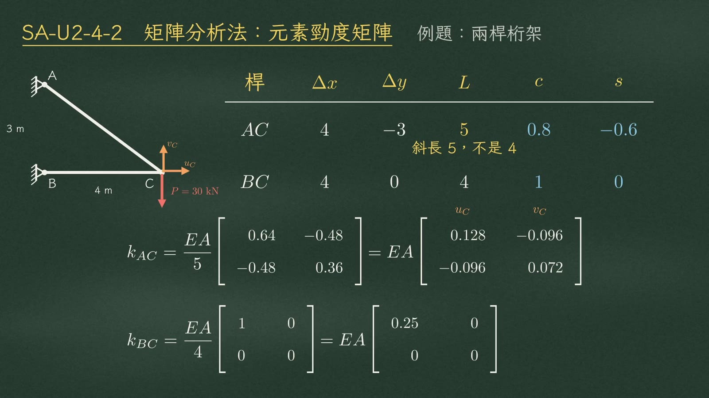
黑板：幾何表（斜長 5，不是 4）與兩桿的小矩陣影片 7:52
先建幾何表（方向從 A 到 C、從 B 到 C）：
| 桿 | \(\Delta x\) | \(\Delta y\) | \(L\) | \(c\) | \(s\) |
|---|
| AC | 4 | −3 | 5 | 0.8 | −0.6 |
| BC | 4 | 0 | 4 | 1 | 0 |
逐桿代矩陣：
$$k_{AC}=\frac{EA}{5}\begin{bmatrix}0.64 & -0.48\\ -0.48 & 0.36\end{bmatrix}=EA\begin{bmatrix}0.128 & -0.096\\ -0.096 & 0.072\end{bmatrix}$$
$$k_{BC}=\frac{EA}{4}\begin{bmatrix}1 & 0\\ 0 & 0\end{bmatrix}=EA\begin{bmatrix}0.25 & 0\\ 0 & 0\end{bmatrix}$$
BC 桿只有左上角 0.25，其餘是零。
相加、解聯立
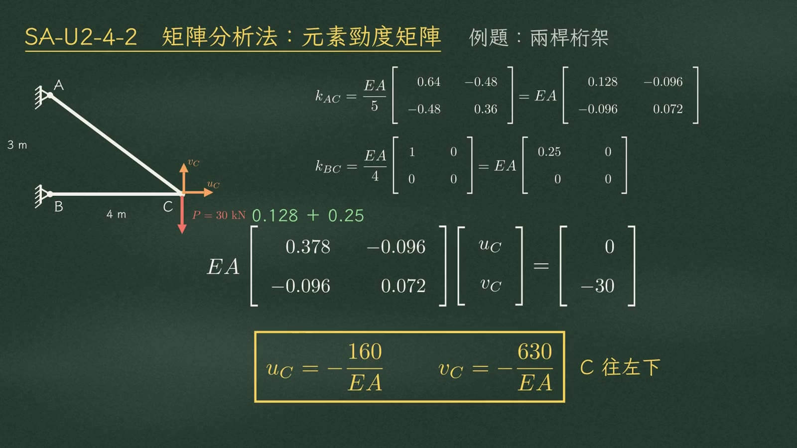
黑板：兩桿直接相加，解出 \(u_C,\ v_C\)影片 8:22
兩根桿都接在 C 點，直接相加（\(0.128+0.25=0.378\)）；右邊載重是 0 和 −30：
$$EA\begin{bmatrix}0.378 & -0.096\\ -0.096 & 0.072\end{bmatrix}\begin{Bmatrix}u_C\\ v_C\end{Bmatrix}=\begin{Bmatrix}0\\ -30\end{Bmatrix}$$
$$u_C=-\frac{160}{EA},\qquad v_C=-\frac{630}{EA}\qquad\text{（C 點往左下移）}$$
回代求軸力
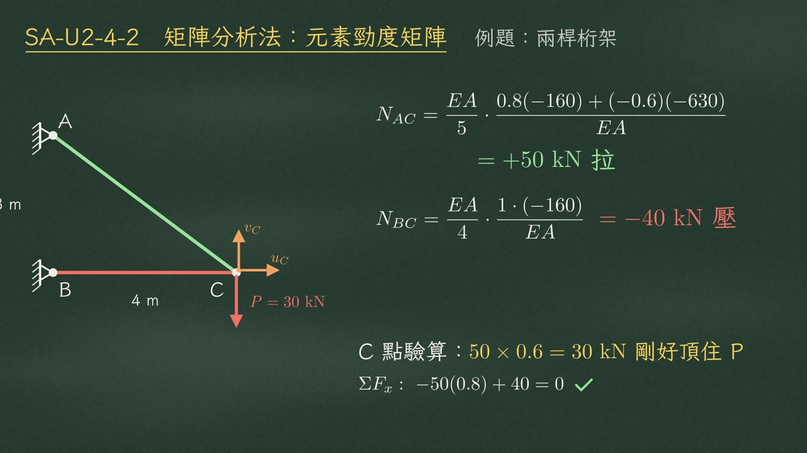
黑板：AC 拉（綠）、BC 壓（紅），C 點驗算影片 8:54
$$N_{AC}=\frac{EA}{5}\cdot\frac{0.8(-160)+(-0.6)(-630)}{EA}=\color{#3f8f5a}{+50\ \text{kN（拉）}}$$
$$N_{BC}=\frac{EA}{4}\cdot\frac{1\cdot(-160)}{EA}=\color{#c0453b}{-40\ \text{kN（壓）}}$$
驗算 C 點拉力 50 的垂直分量 \(50\times0.6=30\) kN，剛好頂住 30 kN 的載重。黑板另列水平向：\(\Sigma F_x:\ -50(0.8)+40=0\) ✓
6三大陷阱
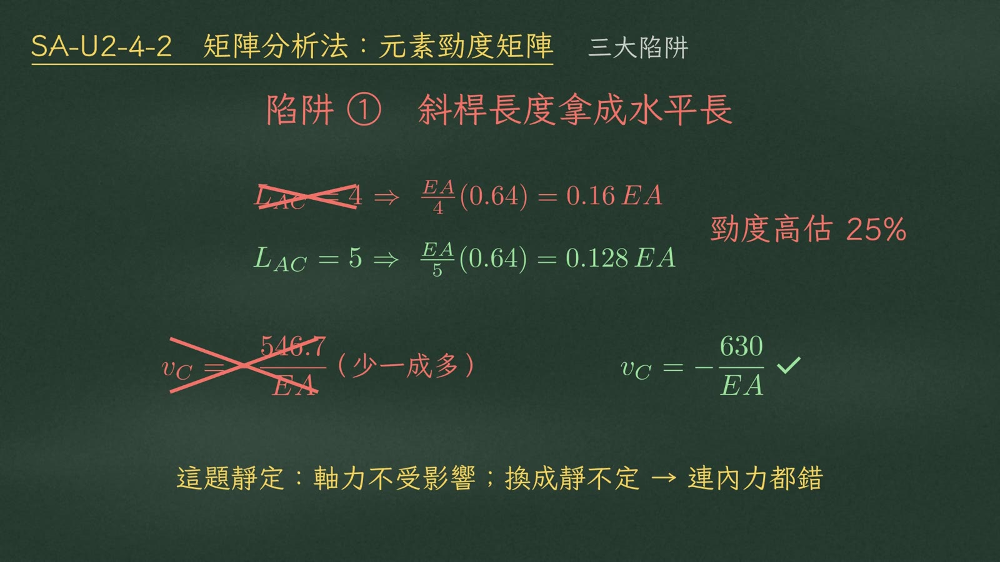
黑板：陷阱 ① 斜桿長度拿成水平長影片 9:20
陷阱 ① 斜桿長度拿成水平長AC 桿如果用 4 代替 5，勁度直接高估 25%：
$$\cancel{L_{AC}=4}\ \Rightarrow\ \tfrac{EA}{4}(0.64)=0.16\,EA\qquad\text{vs.}\qquad L_{AC}=5\ \Rightarrow\ \tfrac{EA}{5}(0.64)=0.128\,EA$$
\(v_C\) 會算成 \(-546.7/EA\)，少了一成多（正確是 \(-630/EA\)）。這題剛好是靜定，軸力不受影響；換成靜不定，連內力都會錯。
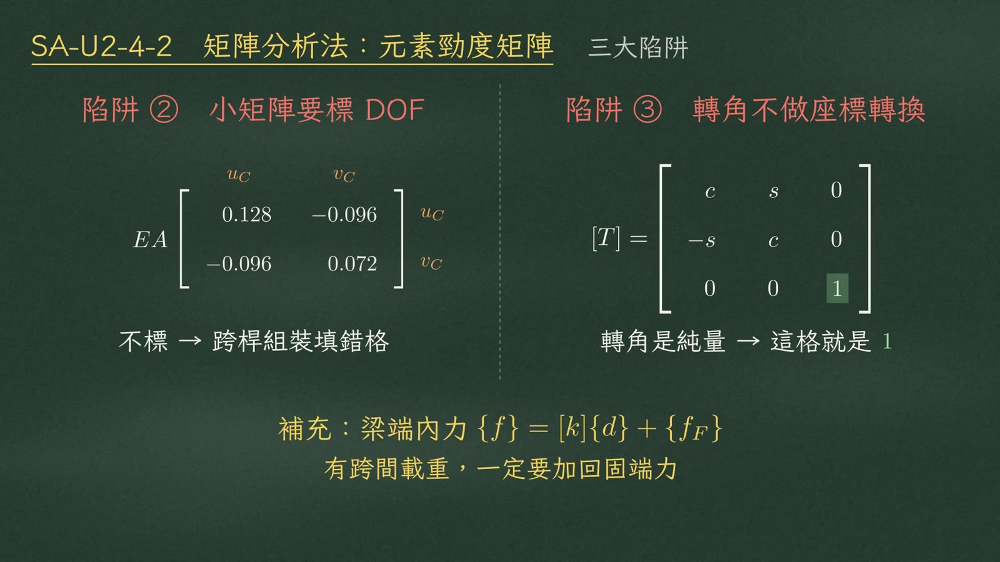
黑板：陷阱 ②、③ 與梁端內力補充影片 9:47
陷阱 ② 小矩陣要標 DOF元素小矩陣旁邊一定要標自由度編號，不然跨桿組裝時很容易填錯格。
陷阱 ③ 轉角不做座標轉換平面問題的轉角是純量，座標轉換時轉角那一格是 1，不要乘 \(c,\ s\)：
$$[T]=\begin{bmatrix}c & s & 0\\ -s & c & 0\\ 0 & 0 & \color{#3f8f5a}{1}\end{bmatrix}$$
補充梁端內力回代時，有跨間載重一定要加回固端力：\(\{f\}=[k]\{d\}+\{f_F\}\)。
7總結
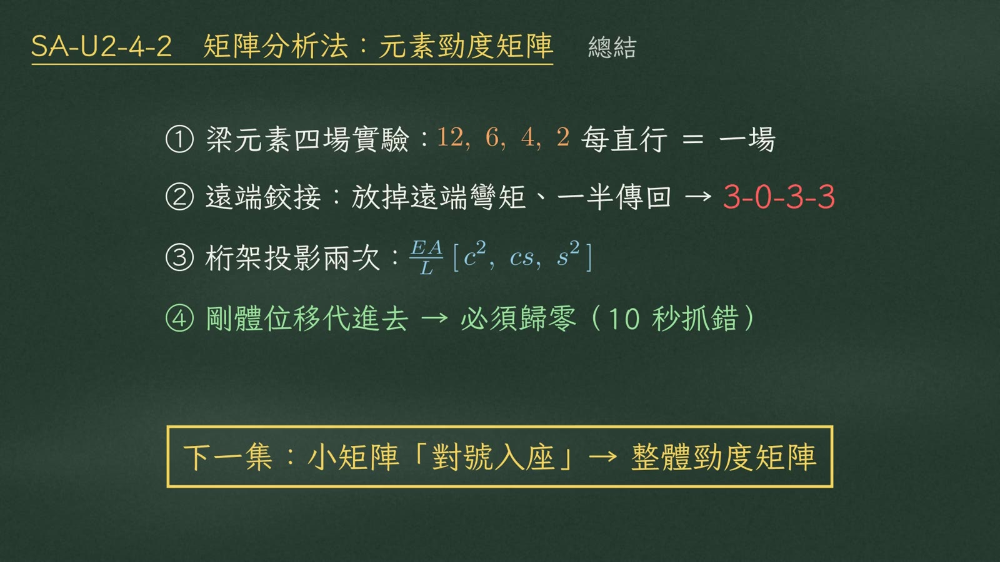
黑板：四點整理與下一集預告影片 10:30
- 梁元素四場實驗，四個數字：12、6、4、2，每一直行就是一場實驗。
- 遠端鉸接時放掉遠端彎矩，一半傳回來，4 變 3，口訣 3-0-3-3。
- 桁架元素投影兩次，留下 \(\dfrac{EA}{L}\,[\,c^2,\ cs,\ s^2\,]\)。
- 最後用剛體位移檢查，代進去必須歸零，十秒抓錯。
下一集：小矩陣「對號入座」→ 整體勁度矩陣SA-U2-4-3 整體組裝